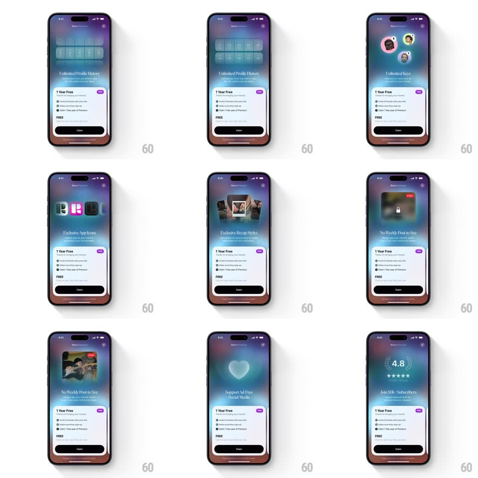

Media
Frame-by-frame

Rebuild this interaction 1:1: Retro's Premium carousel - the paywall auto-advances through feature pages (Share Video, Unlimited Profile History, Unlimited Keys, Exclusive App Icons, Exclusive Recap Styles, Support Ad Free Social Media, Join 50k+ Subscribers), each with its own micro-animation, over an aurora gradient with a fixed "1 Year Free / Claim" card.

Rebuild this interaction 1:1: Retro's Premium carousel - the paywall auto-advances through feature pages (Share Video, Unlimited Profile History, Unlimited Keys, Exclusive App Icons, Exclusive Recap Styles, Support Ad Free Social Media, Join 50k+ Subscribers), each with its own micro-animation, over an aurora gradient with a fixed "1 Year Free / Claim" card. ## Integration Integration: stack-agnostic spec - springs given as stiffness/damping, timed motions as duration + curve; map every value to your framework and animation library of choice. ## Scene Aurora gradient (purple-blue-teal) paywall: "Retro Premium" header with X, a large feature panel per page with title and subline, and a fixed white bottom card - "1 Year Free" with a purple NEW tag, three bullets, "FREE", and a black "Claim" button. ## Motion spec Pattern: auto-advancing feature carousel with per-page micro-animations, ~3.5s per page. - Advance: the feature panel slides horizontally (350ms, ease-out) while the headline crossfades (250ms); swiping manually does the same with drag tracking. - Micro-animations per page: photos pop into the grid (spring ~400/18, 40ms stagger), avatars bounce in sequence, app icons wobble (+-8deg, 600ms), the heart glows and pulses (1.5s), stars fill one by one (150ms each). - Bottom card: static through all pages. - Loop: after the last page, wraps to the first without reversing direction. ## Calibration - Each page's micro-animation plays once on arrival, then idles. - The Claim card never moves - only the upper panel carousels. ## Reduced motion Pages crossfade (300ms); micro-animations are replaced by static final states. ## Don't miss - Every page's motion is different - a single shared slide for all pages loses the point. - The aurora background drifts slowly (30s loop) under everything.